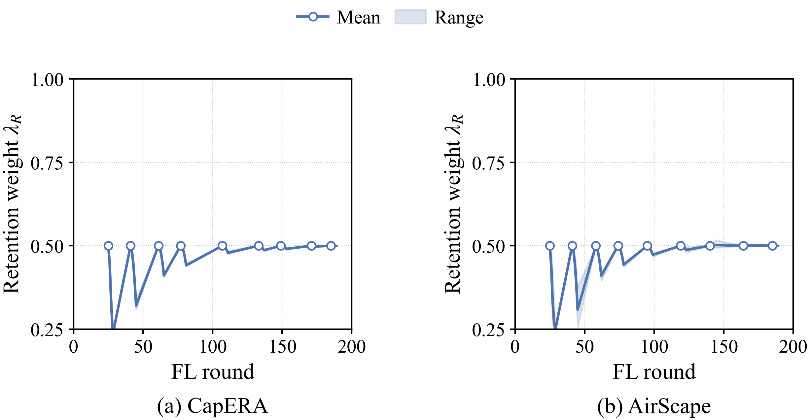
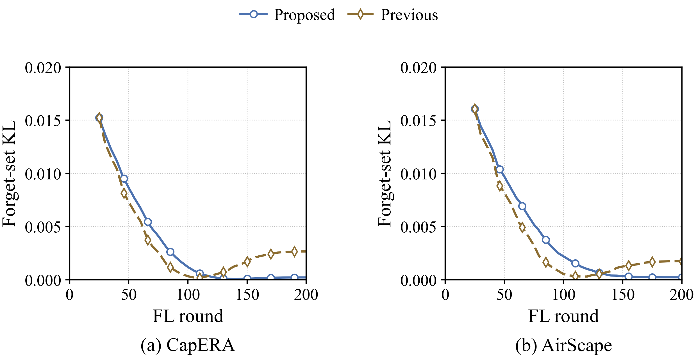
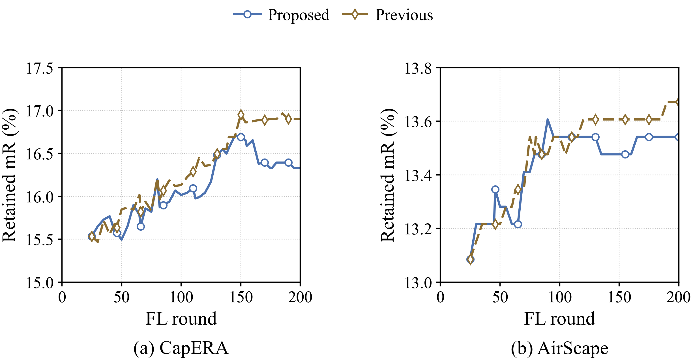

Final charts — adaptive FU
CapERA · AirScape | Definitions, results and limitations · Quality CSV
Lower retrain KL comes with a retained mR tradeoff. Every primary plot uses the new controller; the previous version is preserved in the archive.
Retained mR (%) versus FL rounds

PDF · SVG
Retained mR (%) versus active service time

PDF · SVG
Forget-set KL versus active service time

PDF · SVG
Total energy (kJ) versus bandwidth

PDF · SVG
Delay (s) versus bandwidth

PDF · SVG
Mean FU request delay

PDF · SVG
95th-percentile FU request delay

PDF · SVG
Energy to the common quality target

PDF · SVG
Time to the common quality target

PDF · SVG
Final quality and reference models

PDF · SVG
Automatic retention weight: mean and range across active requests

PDF · SVG
Forget-set KL: adaptive versus previous Proposed

PDF · SVG
Retained mR (%): adaptive versus previous Proposed

PDF · SVG
Forget-set KL versus FL rounds

PDF · SVG
Validation loss versus FL rounds

PDF · SVG
Validation loss versus active service time

PDF · SVG